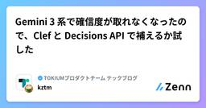
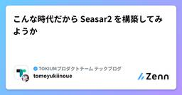
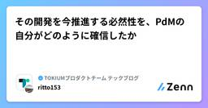

TOKIUMプロダクトチーム テックブログのフィード
https://zenn.dev/p/tokium_dev
『未来へつながる時を生む』 株式会社TOKIUMの技術ブログです🕰
フィード

HTMLを解釈できないJevに、Line-by-line searchでスクレイパーの失敗原因を探させてみた
TOKIUMプロダクトチーム テックブログのフィード
!この記事で書くことJev でスクレイパー失敗検知の仕組みが作れないかJev には HTML を DOM として解析する機能が無いため、各行に番号を付け、見つからなくなった要素に相当する行を選ばせたテストでは59個とも成功した誤ったセレクタのうち、58個を Jev が選んだ行との照合で止めた はじめにJev は文章を作らずに、決めておいた選択肢から答えを選び、確信度を付けて返すモデルです。この Jev で、スクレイパーの弱点を補えないかと考えました。スクレイパーを書いていて困るのは、相手のサイトの HTML が変わったときです。セレクタが0件になっても、処理がエ...
2日前

Gemini 3 系で確信度が取れなくなったので、Clef と Decisions API で補えるか試した
TOKIUMプロダクトチーム テックブログのフィード
kztm です。請求書や領収書を AI で読み取るとき、読み取った値をそのまま採用するか、採用しないかで、その後の処理を変えることがあります。たとえばこのようなロジックの変更の線引きに使える確信度が、Gemini 3 系では取得できなくなっていました。そこで、Cloudflare の Clef と OpenAI の Decisions API に、読み取った値が合っているかを確率で答えさせれば、確信度の代わりになるかを、見本の書類で試しました。どちらも、この 10 月に公開されたばかりです。今回の検証では、Clef の数字は主に、AI の答えがOCR（画像の文字を読み...
3日前

QAにおける敵対的レビューのすゝめ
TOKIUMプロダクトチーム テックブログのフィード
!この記事は何の話か（3 行まとめ）静的解析のように完全にはなりえない道具に AI の敵対的レビューをかけると、反例探しが終わらず、指摘をすべて封じると道具そのものが使えなくなりました（試算では網羅できる要素が388件から1件に）信じてよい前提と、前提が破られたことを見つける検知器を明文化し、指摘を3つに分類させると、どこを直すべきかがはっきりしましたそれでも指摘はまっすぐには減らず、最後にやりとりを終わらせたのは「実データの誤判定につながる指摘だけをブロッカーにする」という止める基準でしたCodex に敵対的レビューを頼むたびに「ブロッカーがあります」という返事が返って...
3日前

こんな時代だから Seasar2 を構築してみようか 1
1
TOKIUMプロダクトチーム テックブログのフィード
Claude CodeやCodexに聞けば、知らない技術でもそれっぽいものが完成します。課題はありつつも、基本的には便利な世の中になったものです。便利になった反面、スキル習得のための学習の機会は奪われてしまったかもしれません。それでも前に進み続け、気づけば『あれ？どうやって勉強すればいいんだ？』というお声も聞くようになりました。個人的には、組織的に学習の機会を意図的に設計する必要があるのでは？という気持ちになっているわけです。私自身、どうやって学習していたんだろう、と振り返ることが多くなり、技術書をひたすら読んでいたり、資格取得に躍起になっていたり、無心で写経（コードを...
5日前

その開発を今推進する必然性を、PdMの自分がどのように確信したか
TOKIUMプロダクトチーム テックブログのフィード
はじめにPdMは、常に最善の決断を下すことが求められる、とても難しい職種です。開発アイテムの要件やスコープ、顧客要望を受け入れて開発するか否か、どのような戦略を置けば競合の製品と渡り合えるのか...全ての決定にトレードオフがあり、全ての課題を満たせる決定はありません。決定を下す以外の普段の時間で、最善の決定を下すための準備をいかに行えているか？これがPdMの器量を決めるといっても過言ではないかもしれません。エンジニアからPdMに転身して4か月、私はこの逃れられない事実に戦々恐々としていますが、1つ、自ら確信をもって下せた決定があります。その確信は、ちょっとしたある試みに...
6日前

今、必要な再現性とは ― 2年目エンジニアの現在地
TOKIUMプロダクトチーム テックブログのフィード
はじめに株式会社TOKIUMの池田と申します。昨年新卒で入社し、開発未経験でSaaSプロダクトの開発チームに配属され、今年からそのチームのリーダーをやっております。私が入社した時点で、開発現場にはすでにAIが当たり前に存在していました。そのため、「以前はこうだったが、今はこう変わった」という比較はできません。比較対象となる過去を知らないからです。AI以前を知らない人間から見たリアルな「現在地」を伝えたいです。社会人になってから、上司には散々「再現性を持って仕事ができるようになりなさい」と言われてきました。たまたま一度成功したことに意味はなく、どんな状況でも同じ成果を出せて初め...
9日前
PCの中を見たことがなかった新人が、ChatGPTに写真を見せながらメモリを8GB→32GBに増設した話
TOKIUMプロダクトチーム テックブログのフィード
1. はじめにこんにちは、TOKIUMの小松です。私は未経験からエンジニアになった新人で、ハードウェアにはまったく詳しくありません。それでも先日、自分のノートPCのメモリを 8GB から 32GB に、自分の手で増設しました。着手した時点では、自分の PC にどのメモリが刺さるのかすら分かっていませんでした。そこからなんとか 32GB まで辿り着けたので、その過程を書いてみます。先に断っておくと、この記事は手順記事ではありません。書きたいことは 2 つです。普段ブラックボックスとして使っているものの、一段下を自分の手で触ってみる面白さ生成AI（ChatGPT）があること...
10日前
無料枠で個人アプリをデプロイする場合のサービスについて比較してみた
TOKIUMプロダクトチーム テックブログのフィード
はじめに生成 AI やフレームワーク、クラウドサービスが充実して、個人でもサイトや Web アプリを作りやすくなりました。仕事や趣味で「ちょっと作って公開してみようかな」と思うこと、ありますよね。私もハンバーガーのレビューアプリを作ったあと、「これ、どこで動かそう？」となりました。無料で使える候補はたくさんありますが、料金表を眺めるだけでは、自分のアプリでちゃんと動くか分かりません。そこで DB・写真ストレージ・メール・API・フロントの 5 層に分けて、実際にデプロイして比べてみました。先に結果だけ確認したい方は、末尾の選んだ構成から読めます。 何をどう比べたか置いたの...
11日前
Claude Code / Codexで「私のlimit、減りすぎ…？」と思ったときに見る記事
TOKIUMプロダクトチーム テックブログのフィード
こんにちは、TOKIUMの花房です。Claude CodeやCodexをサブスクリプションで使っていて、以下のように感じることはないでしょうか。週の半ばで週間上限が尽きる。作業量は先週と変わらないはずなのにSlack botやcron/launchdからエージェントを動かしていて、体感よりもリミット消費が多いプロンプトキャッシュにヒットしているはずなのに、やはり減りが多い気がするCodexの週間上限が急速に減った原因として、私は/goalで一晩動かして自動compact（コンテキストが上限に近づいたとき、エージェントが会話履歴を要約して縮める処理）が何十回も実行されたセッシ...
12日前
Go Conference 2026にGoルドスポンサーとして参加してきました！
TOKIUMプロダクトチーム テックブログのフィード
はじめにTOKIUMでエンジニアをしている石井です！2026年9月11日に開催されたGo Conference 2026にGoルドスポンサーとして参加してきました！TOKIUMがGoカンファにスポンサーとして参加するのは今回が初めてです🎉私は今年新卒エンジニアとして入社し、現在はGoを用いるプロダクトの開発チームに所属しています。その縁もあり、今回はスポンサーブースの企画・運営を私が担当させていただくことになりました！私にとっても初めてのスポンサーブース運営となります🔥この記事では、スポンサーブースの企画・運営で何を準備したかについてご紹介します。個人的なブース運営の備忘録...
12日前
AIのテスト設計、90点未満は差し戻す
TOKIUMプロダクトチーム テックブログのフィード
!この記事は何の話か（3 行まとめ）AI にテスト設計をさせると、禁止語チェックのようなルールベースの検証だけでは足りません。ルールはすべて守っているのに、もっともらしくてひどい設計が出てきますそこで私は、テスト設計を「調査 → 観点シート → 採点 → テストケース展開 → 採点 → 敵対検証 → 指摘を記録して次回に反映」という多段パイプラインにして、生成とは完全に分離した採点器（100 点満点・90 点未満は差し戻して作り直し）と、生成の文脈を知らない敵対レビュアーを組み込みましたルール・採点・敵対レビューはどれも単独では破られますが、破られ方がそれぞれ違います。すり抜け...
15日前
5か月育てたQAのハーネスを棚卸しして、作り直すと決めた理由
TOKIUMプロダクトチーム テックブログのフィード
はじめにこんにちは！TOKIUMでQAチームのリーダーをしている西田です。前回までの記事(テスト設計の自動化[1]、テスト実行の実測[2]、そのグリーンは信じていいのか[3])で、QA業務の大部分をハーネス構造に落とし込み、自動でテストが回る環境を作りました。それから5か月、機能追加、不具合修正、テスト資産の供給が積み上がり、ハーネス（以降QAハーネスと呼びます）の守備範囲はかなり広くなりました。一方で、長期運用によって新たな問題が発生しました。ある日、メンバーから「テストケースを登録したのに、テスト資産に載っていない」という報告が来ました。しかしQAハーネスからは警告も...
16日前
「0件」は、探し方についての事実でしかない
TOKIUMプロダクトチーム テックブログのフィード
この記事について新卒未経験でエンジニアになり、CRE（Customer Reliability Engineering）として、お客様からの問い合わせを調べて答える仕事をしています。「メールが届かない」「画面が崩れる」「この件数を出してほしい」といった依頼を、コードと本番データベースとログを見て、原因まで詰めて返す役割です。調べた結果は、社内の担当者に報告書として渡し、そこからお客様への回答になります。調査には AI を使っていて、この記事の話はそこにも関係します。「メールが届かない」という調査で、あるとき私は報告書に「バウンス記録はありません」と書きました。お客様に送ったメール...
23日前
Claude Codeのrulesを全部やめた
TOKIUMプロダクトチーム テックブログのフィード
こんにちは、TOKIUMの花房です。Claude CodeとCodexを併用していると、少しずつ仕様の差を埋めるために、変な工夫を強いられます。私の環境でも、Claude Code用のrulesに書いた手順をCodexへどう渡すかが問題になっていました。そこで、今回は潔くClaude Codeのrulesを全廃し、共通の指示はAGENTS.mdとAgent Skillsだけへ置くことにしました。ちょうど、XでShopifyのCEOが、Claude CodeがAGENTS.mdと.agents/skillsを読むようになるまで、Shopifyでの使用禁止を考えていると投稿していました...
24日前
都営浅草線に学ぶ、リソースで殴らない問題解決の「くふう」
TOKIUMプロダクトチーム テックブログのフィード
はじめに仕事とは問題解決です。読者の多くは、システムやプロダクトを作り、それによって何らかの問題を解決することで対価を得る仕事をしているはずです。問題解決の現場でよく起きるのが、「あと1年と1億円くれればできますが」みたいな話ですよね。当然、リソースの獲得という課題は解くべきものです。足りないまま「なんとか頑張って」で押し切るのは、くふうではなく無茶振りです。ただ、リソースの見積もりに入る前に、一つ挟んでほしい問いがあります。最初に思いついたやり方でToDoを積み上げているだけではないか、という問いです。今回は、都営浅草線のホームドアを題材にします。都営地下鉄の他の3線と...
25日前
「怖い」は、AIに任せすぎているサインだった
TOKIUMプロダクトチーム テックブログのフィード
どこまでAIに任せていいのかAIで開発を自動化した、という話をよく見かけるようになりました。有名な例では、OpenAIはCodexを使い、5か月で約100万行のコード、約1,500件のプルリクエストという驚異的なペースで新規プロダクトを開発しました。人間によるレビューは必須ではなく、エージェントが自分の変更をマージするところまで任せています。https://openai.com/index/harness-engineering/また、Vercelが2026年6月に公開したイベントレポートでは、Shopifyは低リスクなプルリクエストの60〜70%を自動でレビューし、開発者が...
25日前
モデルの責務分割と保存形式からの独立を見分ける
TOKIUMプロダクトチーム テックブログのフィード
!想定読者RailsやLaravel、DjangoのようなActive Record型のORMでモデルの肥大化を経験した人RepositoryやDDDの考え方を取り入れるべきか試行錯誤している人Data Mapper型の構成を検討している人この記事で紹介することモデルの責務を分割する判断と、モデルを保存形式から独立させる判断を分ける基準Active Recordのまま責務を分けた事例と、Data Mapperで分離した事例で何を得たか次の改修でActive Recordを使い続けるか分離するかを決めるときに確認する事項Active Recordのモデルを使って...
1ヶ月前
AIエージェントの失敗を228件記録したら、根本原因は3つしかなかった
TOKIUMプロダクトチーム テックブログのフィード
!この記事は何の話か（3 行まとめ）AI（Claude Code）が失敗するたびに教訓を1ファイル1パターンで記録する運用を数ヶ月続けたら228件たまったので、全件を分類集計しました教訓の大半は「Yする前にXせよ」「XはYではない」の2つの構文に収束しており、規律系の失敗の根本原因は3つ（代理シグナルの過信・否定の早撃ち・浦島太郎現象）しかありませんでしたdb:prepare が exit 0 なのに作成テーブル0件、復元不能バックアップ、敵対検証エージェントの指摘が全部偽陽性、といった実例と、再発防止策（行動ルール→Hookによる機械強制→本番経路の定期実走）をどう積んでい...
1ヶ月前
あなたのClaude Codeは直列ですか？うちは並列です。
TOKIUMプロダクトチーム テックブログのフィード
!この記事は何の話か（3行まとめ）Claude Codeを複数窓同時に走らせると、タスクの二重着手・成果の取りこぼし・設定ファイルの上書き事故が起きます。それを防ぐために1年弱かけて作った自作機構Foremanの「内部機構編」です（成り立ちと定量効果は前作）起点セッション（orchestrator＝幹）が自分で新しいClaude Codeセッション（worker＝葉）を起動して命令を出し、追記専用の台帳（ledger）だけを介してタスクを配り・回収します。ロックは使わず、advisory（緩い自己申告）で衝突を検知します実際にハマった事故（workerの完了申告と成果物の実在が...
1ヶ月前
正解データを作らない、簡単なevalの作り方
TOKIUMプロダクトチーム テックブログのフィード
Lenny's PodcastにAnthropicのLabsチームのプロダクト責任者、Dianne Pennさんが出た回に、印象的な言い回しがありました。彼女のチームには「evalは新しいPRDだ」という合言葉がある、というのです。https://www.lennysnewsletter.com/p/anthropics-first-technical-pm-onユーザーフィードバックから失敗のパターンを突き止め、それを再現する評価セット（eval）を書く。それがPRDに代わって、ユーザー価値を定義する成果物になっている、という話です。たとえば初期のClaudeは、JSONを頼まれ...
1ヶ月前